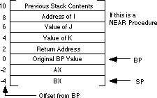

|
Table of Content | Chapter Eleven (Part 5) |
|
Table of Content | Chapter Eleven (Part 5) |
| CHAPTER ELEVEN: PROCEDURES AND FUNCTIONS (Part 4) |
| 11.5.9 - Passing Parameters on the Stack |
Most HLLs use the stack to pass parameters because this method is fairly efficient. To pass parameters on the stack, push them immediately before calling the subroutine. The subroutine then reads this data from the stack memory and operates on it appropriately. Consider the following Pascal procedure call:
CallProc(i,j,k+4);
Most Pascal compilers push their parameters onto the stack in the order that they appear in the parameter list. Therefore, the 80x86 code typically emitted for this subroutine call (assuming you're passing the parameters by value) is
push i
push j
mov ax, k
add ax, 4
push ax
call CallProc
Upon entry into CallProc, the 80x86's stack
looks like that shown below (for a near or a far procedure).
You could gain access to the parameters passed on the stack by removing the data from the stack (Assuming a near procedure call):
CallProc proc near
pop RtnAdrs
pop kParm
pop jParm
pop iParm
push RtnAdrs
.
.
.
ret
CallProc endp
There is, however, a better way. The 80x86's architecture
allows you to use the bp (base pointer) register to access parameters passed
on the stack. This is one of the reasons the disp[bp], [bp][di], [bp][si],
disp[bp][si], and disp[bp][di] addressing modes use the stack segment
rather than the data segment. The following code segment gives the standard procedure
entry and exit code:
StdProc proc near
push bp
mov bp, sp
.
.
.
pop bp
ret ParmSize
StdProc endp
ParmSize
is the number of bytes of parameters pushed
onto the stack before calling the procedure. In the CallProc procedure there
were six bytes of parameters pushed onto the stack so ParmSize would be six.
Take a look at the stack immediately after the execution of
mov bp, sp in StdProc. Assuming you've pushed three
parameter words onto the stack, it should look something like shown below:
Now the parameters can be fetched by indexing off the bp
register:
mov ax, 8[bp] ;Accesses the first parameter
mov ax, 6[bp] ;Accesses the second parameter
mov ax, 4[bp] ;Accesses the third parameter
When returning to the calling code, the procedure must
remove these parameters from the stack. To accomplish this, pop the old bp
value off the stack and execute a ret 6 instruction. This pops the return
address off the stack and adds six to the stack pointer, effectively removing the
parameters from the stack.
The displacements given above are for near procedures only. When calling a far procedure,
The stack contents when calling a far procedure are shown below:
This collection of parameters, return address, registers saved on the stack, and other items, is a stack frame or activation record.
When saving other registers onto the stack, always make
sure that you save and set up bp before pushing the other registers. If you
push the other registers before setting up bp, the offsets into the stack
frame will change. For example, the following code disturbs the ordering presented above:
FunnyProc proc near
push ax
push bx
push bp
mov bp, sp
.
.
.
pop bp
pop bx
pop ax
ret
FunnyProc endp
Since this code pushes ax and bx
before pushing bp and copying sp to bp, ax
and bx appear in the activation record before the return address (that would
normally start at location [bp+2]). As a result, the value of bx
appears at location [bp+2] and the value of ax appears at
location [bp+4]. This pushes the return address and other parameters farther
up the stack as shown below:
Although this is a near procedure, the parameters don't
begin until offset eight in the activation record. Had you pushed the ax and bx
registers after setting up bp, the offset to the parameters would have been
four:
FunnyProc proc near
push bp
mov bp, sp
push ax
push bx
.
.
.
pop bx
pop ax
pop bp
ret
FunnyProc endp
Therefore, the push bp and mov bp,
sp instructions should be the first two instructions any subroutine executes when
it has parameters on the stack.
Accessing the parameters using expressions like
[bp+6] can make your programs very hard to read and maintain. If you would like to
use meaningful names, there are several ways to do so. One way to reference parameters by
name is to use equates. Consider the following Pascal procedure and its equivalent 80x86
assembly language code:
procedure xyz(var i:integer; j,k:integer);
begin
i := j+k;
end;
Calling sequence:
xyz(a,3,4);
Assembly language code:
xyz_i equ 8[bp] ;Use equates so we can reference
xyz_j equ 6[bp] ; symbolic names in the body of
xyz_k equ 4[bp] ; the procedure.
xyz proc near
push bp
mov bp, sp
push es
push ax
push bx
les bx, xyz_i ;Get address of I into ES:BX
mov ax, xyz_j ;Get J parameter
add ax, xyz_k ;Add to K parameter
mov es:[bx], ax ;Store result into I parameter
pop bx
pop ax
pop es
pop bp
ret 8
xyz endp
Calling sequence:
mov ax, seg a ;This parameter is passed by
push ax ; reference, so pass its
mov ax, offset a ; address on the stack.
push ax
mov ax, 3 ;This is the second parameter
push ax
mov ax, 4 ;This is the third parameter.
push ax
call xyz
On an 80186 or later processor you could use the following code in place of the above:
push seg a ;Pass address of "a" on the
push offset a ; stack.
push 3 ;Pass second parm by val.
push 4 ;Pass third parm by val.
call xyz
Upon entry into the xyz procedure, before the
execution of the les instruction, the stack looks like shown below:
Since you're passing I by reference, you must push its
address onto the stack. This code passes reference parameters using 32 bit segmented
addresses. Note that this code uses ret 8. Although there are three
parameters on the stack, the reference parameter I consumes four bytes since
it is a far address. Therefore there are eight bytes of parameters on the stack
necessitating the ret 8 instruction.
Were you to pass I by reference using a near pointer rather than a far pointer, the code would look like the following:
xyz_i equ 8[bp] ;Use equates so we can reference
xyz_j equ 6[bp] ; symbolic names in the body of
xyz_k equ 4[bp] ; the procedure.
xyz proc near
push bp
mov bp, sp
push ax
push bx
mov bx, xyz_i ;Get address of I into BX
mov ax, xyz_j ;Get J parameter
add ax, xyz_k ;Add to K parameter
mov [bx], ax ;Store result into I parameter
pop bx
pop ax
pop bp
ret 6
xyz endp
Note that since I's address on the stack is only two bytes (rather than four), this routine only pops six bytes when it returns.
Calling sequence:
mov ax, offset a ;Pass near address of a.
push ax
mov ax, 3 ;This is the second parameter
push ax
mov ax, 4 ;This is the third parameter.
push ax
call xyz
On an 80286 or later processor you could use the following code in place of the above:
push offset a ;Pass near address of a.
push 3 ;Pass second parm by val.
push 4 ;Pass third parm by val.
call xyz
The stack frame for the above code appears below:

When passing a parameter by value-returned or result, you
pass an address to the procedure, exactly like passing the parameter by reference. The
only difference is that you use a local copy of the variable within the procedure rather
than accessing the variable indirectly through the pointer. The following implementations
for xyz show how to pass I by value-returned and by result:
; xyz version using Pass by Value-Returned for xyz_i
xyz_i equ 8[bp] ;Use equates so we can reference
xyz_j equ 6[bp] ; symbolic names in the body of
xyz_k equ 4[bp] ; the procedure.
xyz proc near
push bp
mov bp, sp
push ax
push bx
push cx ;Keep local copy here.
mov bx, xyz_i ;Get address of I into BX
mov cx, [bx] ;Get local copy of I parameter.
mov ax, xyz_j ;Get J parameter
add ax, xyz_k ;Add to K parameter
mov cx, ax ;Store result into local copy
mov bx, xyz_i ;Get ptr to I, again
mov [bx], cx ;Store result away.
pop cx
pop bx
pop ax
pop bp
ret 6
xyz endp
There are a couple of unnecessary mov instructions in this code. They are present only to precisely implement pass by value-returned parameters. It is easy to improve this code using pass by result parameters. The modified code is
; xyz version using Pass by Result for xyz_i
xyz_i equ 8[bp] ;Use equates so we can reference
xyz_j equ 6[bp] ; symbolic names in the body of
xyz_k equ 4[bp] ; the procedure.
xyz proc near
push bp
mov bp, sp
push ax
push bx
push cx ;Keep local copy here.
mov ax, xyz_j ;Get J parameter
add ax, xyz_k ;Add to K parameter
mov cx, ax ;Store result into local copy
mov bx, xyz_i ;Get ptr to I, again
mov [bx], cx ;Store result away.
pop cx
pop bx
pop ax
pop bp
ret 6
xyz endp
As with passing value-returned and result parameters in registers, you can improve the performance of this code using a modified form of pass by value. Consider the following implementation of xyz:
; xyz version using modified pass by value-result for xyz_i
xyz_i equ 8[bp] ;Use equates so we can reference
xyz_j equ 6[bp] ; symbolic names in the body of
xyz_k equ 4[bp] ; the procedure.
xyz proc near
push bp
mov bp, sp
push ax
mov ax, xyz_j ;Get J parameter
add ax, xyz_k ;Add to K parameter
mov xyz_i, ax ;Store result into local copy
pop ax
pop bp
ret 4 ;Note that we do not pop I parm.
xyz endp
The calling sequence for this code is
push a ;Pass a's value to xyz.
push 3 ;Pass second parameter by val.
push 4 ;Pass third parameter by val.
call xyz
pop a
Note that a pass by result version wouldn't be practical since you have to push something on the stack to make room for the local copy of I inside xyz. You may as well push the value of a on entry even though the xyz procedure ignores it. This procedure pops only four bytes off the stack on exit. This leaves the value of the I parameter on the stack so that the calling code can store it away to the proper destination.
To pass a parameter by name on the stack, you simply push the address of the thunk. Consider the following pseudo-Pascal code:
procedure swap(name Item1, Item2:integer);
var temp:integer;
begin
temp := Item1;
Item1 := Item2;
Item2 := Temp;
end;
If swap is a near procedure, the 80x86 code for this procedure could look like the following (note that this code has been slightly optimized and does not following the exact sequence given above):
; swap- swaps two parameters passed by name on the stack.
; Item1 is passed at address [bp+6], Item2 is passed
; at address [bp+4]
wp textequ <word ptr>
swap_Item1 equ [bp+6]
swap_Item2 equ [bp+4]
swap proc near
push bp
mov bp, sp
push ax ;Preserve temp value.
push bx ;Preserve bx.
call wp swap_Item1 ;Get adrs of Item1.
mov ax, [bx] ;Save in temp (AX).
call wp swap_Item2 ;Get adrs of Item2.
xchg ax, [bx] ;Swap temp <-> Item2.
call wp swap_Item1 ;Get adrs of Item1.
mov [bx], ax ;Save temp in Item1.
pop bx ;Restore bx.
pop ax ;Restore ax.
ret 4 ;Return and pop Item1/2.
swap endp
Some sample calls to swap follow:
; swap(A[i], i) -- 8086 version.
lea ax, thunk1
push ax
lea ax, thunk2
push ax
call swap
; swap(A[i],i) -- 80186 & later version.
push offset thunk1
push offset thunk2
call swap
.
.
.
; Note: this code assumes A is an array of two byte integers.
thunk1 proc near
mov bx, i
shl bx, 1
lea bx, A[bx]
ret
thunk1 endp
thunk2 proc near
lea bx, i
ret
thunk2 endp
The code above assumes that the thunks are near procs that reside in the same segment as the swap routine. If the thunks are far procedures the caller must pass far addresses on the stack and the swap routine must manipulate far addresses. The following implementation of swap, thunk1, and thunk2 demonstrate this.
; swap- swaps two parameters passed by name on the stack.
; Item1 is passed at address [bp+10], Item2 is passed
; at address [bp+6]
swap_Item1 equ [bp+10]
swap_Item2 equ [bp+6]
dp textequ <dword ptr>
swap proc far
push bp
mov bp, sp
push ax ;Preserve temp value.
push bx ;Preserve bx.
push es ;Preserve es.
call dp swap_Item1 ;Get adrs of Item1.
mov ax, es:[bx] ;Save in temp (AX).
call dp swap_Item2 ;Get adrs of Item2.
xchg ax, es:[bx] ;Swap temp <-> Item2.
call dp swap_Item1 ;Get adrs of Item1.
mov es:[bx], ax ;Save temp in Item1.
pop es ;Restore es.
pop bx ;Restore bx.
pop ax ;Restore ax.
ret 8 ;Return and pop Item1, Item2.
swap endp
Some sample calls to swap follow:
; swap(A[i], i) -- 8086 version.
mov ax, seg thunk1
push ax
lea ax, thunk1
push ax
mov ax, seg thunk2
push ax
lea ax, thunk2
push ax
call swap
; swap(A[i],i) -- 80186 & later version.
push seg thunk1
push offset thunk1
push seg thunk2
push offset thunk2
call swap
.
.
.
; Note: this code assumes A is an array of two byte integers.
; Also note that we do not know which segment(s) contain
; A and I.
thunk1 proc far
mov bx, seg A ;Need to return seg A in ES.
push bx ;Save for later.
mov bx, seg i ;Need segment of I in order
mov es, bx ; to access it.
mov bx, es:i ;Get I's value.
shl bx, 1
lea bx, A[bx]
pop es ;Return segment of A[I] in es.
ret
thunk1 endp
thunk2 proc near
mov bx, seg i ;Need to return I's seg in es.
mov es, bx
lea bx, i
ret
thunk2 endp
Passing parameters by lazy evaluation is left for the programming projects.
Additional information on activation records and stack frames appears later in this chapter in the section on local variables.
|
Table of Content | Chapter Eleven (Part 5) |
Chapter Eleven: Procedures and
Functions (Part 4)
27 SEP 1996